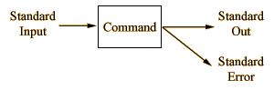

|
3-2 輸入/輸出重導向（I/O Redirection）
“輸入/輸出重導向”是 shell 用來處理標準輸入（standard input）、標準輸出（standard
output）與標準錯誤（standard error）等訊息的重要功能。它可將指令執行的輸出導向到檔案中，亦可把執行程式或指令所需的引數或輸入由檔案導入。或把指令執行錯誤時所產生的錯誤訊息導向
/dev/null。其應用範圍可說相當廣範。

3-2-1 輸入重導向（Input Redirection）的運用
符號“<”－－重導向標準輸入
如右圖所示，通常一個程式或指令所須輸入的參數便稱為標準輸入（standard input）。在導入的運用上，可用來導入檔案。語法如下：
使用語法 command < file
下面的例子，第一是將檔案“mail.file”重導入指令 mail 中，做為傳送mail給使用者
akk 的內容。第二則是將檔案“file.data”重導入指令“wc -l”中，用以計算該檔案的行數、字數（word）與字元數。
1 % mail akk < mail.file
2 % wc < file.data
1 11 66
雖然以上重導入的使用方法是正確的，但對於一般的指令的運用來說實在是多此一舉，因為像這類指令的語法均會支援檔案輸入的功能。但是重導入的運用卻依然不可輕意忽視，有許多軟體公司所發展的應用程式或自行開發的
shell 程式（一般稱為 shell script），大部份多採用交談式的方式來要求使用者輸入所需的資料，像此類的交談資料，可預先做成一個檔案再以重導入的方式執行，不但省去交談的程序更可進一步將簡化作業程序。
符號“<<”－－字元的重導向
使用語法 command << word
word or data keyin
....
word
在上面我們所提到的重導向符號“<”它所能處理的對像是檔案，如果不是檔案便無法處理。而在這裡將為你介紹的符號“<<”則是用來重導向文字使用的。我們來看它運用在指令行模式下的情況。
% mail akk << EOF!
testting I/O Redirection function
testting I/O Redirection function
testting I/O Redirection function
EOF!
%
在上面我們使用了符號 “<<” 來將我們想要傳 mail 給使用者 akk
的訊息一一由鍵盤鍵入。指令行最後的“EOF!”代表當我們見要鍵入內容的結尾用字－－我們可稱它為“關鍵字”。當我們鍵入指令“mail
akk << EOF!”後 return，便可開始鍵入想要傳送的訊息內容，如果想要結束僅需在新的一行鍵入“關鍵字”便可。
這個符號“<<”常被運用在檔案編輯的指令上，如指令 ed、ex。如下例子：
% ed sed1.f << ok
g/root/s/0/1/
g/akira/d
w sed2.f
q
ok
上
例我們運用這種重導入的方式來編輯檔案“sed1.f”。第二行與第三行是指令 ed
的編輯指令，前者是找尋檔案內所有的“root”字串，並將該行的“０”代換為“１”。後者則是找尋檔案內所有的“akira”字串，並將該行清除。第四
行也是編輯指令，用意是將編輯的結果寫到另一個檔案“sed2.f”中。第五行則是退出指令 ed
編輯器。第六行便是重導入的“關鍵字”，告訴導入終止。
如果有機會試一試這種用法！使用它來編輯檔案，有時候比你進入 vi 編輯器做還快速。
3-2-2 輸出重導向（Output Redirection）的運用
在重導出的使用比較起重導入的運用複雜，也比較常使用到。通常指令的輸出訊號包含到標準輸出（standard
output）與標準錯誤（standard error）二種。關於重導出所使用的符號也比較多，總共有 8 個符號。就功能的區別，大致上可歸類成兩組。如下表所示：
|
第一組
|
“>”
|
“>&”
|
“>>”
|
“>>&”
|
|
第二組
|
“>!”
|
“>&!”
|
“>>!”
|
“>>&!”
|
符號“>”與“>&”－－重導向標準輸出與標準錯誤
使用語法 command > file
command >& file
先讓我們來下一個指令 find，從“root”以下找尋檔名為“Cshrc”，並將結果列出來。
7 % find / -name Cshrc -print
/usr/lib/Cshrc
find: cannot chdir to /var/spool/mqueue: Permission denied
/home1/akira/cshell/Cshrc
8 %
指
令所輸出的訊息有三行，有兩行是指令找到我們指定檔名的資料輸出，這正是我們所要的。而這些輸出訊息的格式屬於標準輸出。但卻有一行訊息顯示“/var
/spool/mqueue”目錄不允許我們進入，換句話說該目錄我們沒有讀取的權限。這行訊息會混在兩行標準輸出的訊息中是因為指令 find
搜尋目錄的次序關係，並無特殊意義。但訊息本身的格式卻不屬於標準輸出，而是標準錯誤。這一點我們可用以下的指令來獲得證實：
9 % find / -name Cshrc -print > file.tmp
find: cannot chdir to /var/spool/mqueue: Permission denied
10 % cat file.tmp
/usr/lib/Cshrc
/home1/akira/cshell/Cshrc
當我們再一次執行同樣的 find 指令，但使用重導向符號“>”，將輸出導向到檔案“file.tmp”中。結果發現只剩下警告訊息依然出現在螢幕上。用指令
cat 去看檔案“file.tmp”證實需要的資料確實在檔案中。這證實了警告訊息是不同於一般的輸出訊息的。因為它的模式是標準錯誤。其實就整體而言，在
C Shell 的環境中警告性的、錯誤性的輸出訊息均屬於此類－－標準錯誤。千萬別忘了。
如果說你想要將這了兩種輸出訊息一起重導向到檔案“file.tmp”中，可改用重導向符號“>&”。如下：
11 % find / -name Cshrc -print >&
file.tmp
12 % cat file.tmp
/usr/lib/Cshrc
find: cannot chdir to /var/spool/mqueue: Permission denied
/home1/akira/cshell/Cshrc
情
況便如我們所要的，所有訊息都在檔案
“file.tmp”中了。在這裡我們要告訴你一件事，其實在輸出重導向這一系列的符號中，“&”符號便是代表標準錯誤，只要是重導向符號中含有
“&”，就表是可重導標準錯誤。如
“>&”“>>&”“>&!”“>>&!”都是。
對
於重導向符號“>”與“>&”在運用上有一個特性，那就是當你所指令的檔案實際上不存在時，重導向功能會幫你產生該檔案，並將資料寫
入。但如果該檔案在執行前便以存在，則當指令執行重導向功能完後，該檔案原來的資料將會被重導入的資料所重寫。換句話說，便是原來的資料將會完全不見，且
無法挽回。使用上請讀者務必注意到此一特點。我們來看下面的實際例子：
13 % cat file.tmp
/usr/lib/Cshrc
find: cannot chdir to /var/spool/mqueue: Permission denied
/home1/akira/cshell/Cshrc
14 % tail -1 /etc/passwd > file.tmp
15 % cat file.tmp
+::0:0:::
我們可清楚地看出，當指令“tail -1 /etc/passwd > file.tmp”執行完後，檔案“file.tmp”的內容已變成是“/etc/passwd”檔案的最後一行。而原來的資料以不見了。
在重導向的運用上有一項限制，請先看到下面的例子：
% cat acct.data > acct.data
cat: input acct.data is output
當指令 cat 所產生的標準輸出的正是檔案“acct.data”的內容，而我們又要將這個輸出重導向到檔案“acct.data”中。於是造成指令
cat 的執行錯誤。在這裡我們要告訴你在運用重導向時，不能有輸出檔名與重導向的檔名相同的情況產生。
符號“>>”與“>>&”
使用語法 command >> file
command >>& file
這兩個重導向的符號比起先前我們所介紹的符號“>”與“>&”，在功能上有一個很大的差別。就是符號“>>”與“>>&”在重導向輸出資料到檔案時，不會重寫原檔案內容。它們只會將輸出資料重導向到原檔案內容的後面。
有了這兩個符號，我們便可將多個指令的輸出一起重導到同一個檔案中，而不必再擔心內容會被重寫了。我們來看個例子：
3 % who >> data.tmp
4 % ps axu >> data.tmp
5 % df >> data.tmp
第
一個執行的指令“who >>
data.tmp”如果檔案“data.tmp”不存在，重導向符號“>>”與符號“>”相同，會自動產生該檔案，並將輸出重導向到檔
案中。如果“data.tmp”檔案已存在，則指令輸出便直接在寫到原有的內容後面。而第二、三個指令的輸出，一樣地會依序串寫到該檔案中。如果你覺得三
行指令太麻煩了，改成以下的執行方式有也行：
% ( who ; ps axu ; df ) >> data.tmp
（如果連標準錯誤資料也要寫入檔案則必須使用符號“>>&”）
設定 $noclobber 預設變數改變輸出重導向特性
變數設定語法 set noclobber
取消變數設定語法 unset noclobber
以上對輸出重導向所使用的符號已介紹了四個（第一組），但其實還有四個尚未介紹（第二組），它們的功能與上述的符號有點對映關係。如下：
|
第一組
|
“>”
|
“>&”
|
“>>”
|
“>>&”
|
|
第二組
|
“>!”
|
“>&!”
|
“>>!”
|
“>>&!”
|
以
下的四個符號在未設定 $noclobber 變數時功能與上四個完全相同。但如果你設定 $noclobber
變數，使用符號“>”與“>&”將無法重寫（overwrite）已存在的檔案，而必需使用符號“>!”與
“>&!”才行。同時使用符號“>>”與“>>&”亦不能將指令輸出導向不存在的檔案中，得使用
“>>!”與“>>&!”。
在下面的例子當中，我們先設定了 $noclobber 變數，然後指令 ls 的結果告訴我們該目錄下並無任何檔案存在。接著我們操作幾個運用重導向的指令看看它們的結果。
1 % set noclobber
2 % ls
total 0
3 % cat /etc/passwd >> passwd.bak
passwd.bak: No such file or directory
4 % cat /etc/passwd >>! passwd.bak
當指令 3 執行失敗的原因是“passwd.bak”檔案不存在。這如果在沒有設定預設變數
noclobber 的情況下，它是不會產生錯誤的。接著指令4將重導符號由“>>”改為“>>!”便順利地執行成功了。這時以指令
ls -l 便可清楚地看到該檔案的各項資料。
% ls -l
total 1
1 -rw-r--r-- 1 akira 1182 Sep 9 15:19 passwd.bak
在這種環境下如果我們鍵入了以下的指令：
% ps axu > passwd.bak
file_a: File exists.
則因為該檔名已經存在，不允許我們用符號“>”來將該檔的內容重寫。這便是設定預設變數
noclobber 所產生的保護作用。如果想重寫該檔案則必須使用符號“>!”才行，如下所示：
% ps axu >! passwd.bak
以
上所模擬的情況僅只是設定前與設定後的最大不同處。至餘其它的情況請自行在電腦上依序演練，注意到與原先未設定變數前的種種差別，必可加深在使用上的經
驗。此項功能將對於撰寫 shell 程式有相當的幫助。如果你想取消該變數的設定只要在指令行鍵入“unset
noclobber”便可以了。在上面的各個重導向的情況中，如果須連標準錯誤訊息也一起重導的話，只要重導向符號代有“&”便可。如
“>&!”及“>>&!”。千萬注意！位置不能放錯。
3-2-3 實用的輸入/輸出重導向運用
標準輸出與標準錯誤的分離重導向
就
如我們所知，一個指令的輸出訊息包含了標準輸出與標準錯誤兩種型態。有時我們會有需要將某指令的輸出訊息儲存建檔管理，除了正確的輸出資料外，那些錯誤訊
往往也是相當重要的，為了將有兩種訊息分開來存放，重導向的使用手法就顯得格外的重要，針對此種情況常用的重導向方法是將指令與重導向標準輸出用括號括起
來，如此一來此部份會先執行，並且指令的標準輸出訊息也會先儲存到指定的檔案中，輸出訊息剩下的部份就是標準錯誤訊息，我們再用重導符號
“>&”重導到指定的錯誤訊息檔案便大功告成了。使用語法如下：
( command > stdout.file ) >& err.data
讓我們來看一個實際的運用：
% (find /user1 -type f -size +50000c -ls >
big.file) >& err.file
上例中我們用指令 find 去搜尋目錄 /user1 之下所有超過 50000 字元的檔案，並將結果以檔名
big.file 儲存。但指令執行的錯誤訊息則存到 err.file 檔案中。如此便將指令 find 的標準輸出與標準錯誤訊息分開來存放，讓我們更容易整理。
輸出重導向與/dev/null－－UNIX系統的垃箕筒
真正在實際的運用上，有時候執行一個指令並不是要它的輸出結果，而是要它的指令執行狀態訊號。（這種使用手法在撰寫
Shell 程式時常使用的上）。這時輸出的訊號反而便成一不需要的，這時有沒有可能將指令的輸出，讓它“消失”呢？有的！在 UNIX
系統中的早就為你準備了一個垃箕筒，專門供你處理不必要輸出訊息。你只要將輸出重導到“/dev/null”這個垃箕筒來，輸出訊號自然便消失，而且也不會佔用硬碟或其它資源。來看一個運用指令
grep 的例子：
1 % ps axu | grep cron | grep -v grep
root 136 0.0 0.0 56 0 ? IW Oct 3 0:00 cron
2 % echo $status
0
在上面我們將指令所輸出的系統處理程序的資料，用管線引導到指令 grep 中去篩選“cron”，並去除
grep 指令本身的處理程序。但這並非我們主要的所須的，真正所要的是指令 grep 的執行狀態，如上用指令“echo $status”所顯示的輸出“0”，便是指令
grep 的執行狀態。“0”表示指令 grep 有找到指定的字串，如果是“1”則表示沒有找到所指定的字串。我們可看見第一行指令是會有訊號輸出的，讓我們將它改一改。如下：
3 % ps axu | grep cron | grep -v grep >&
/dev/null
4 % echo $status
0
指令的輸出訊號不再出現在螢幕，且指令的執行情況正常。這便是“/dev/null”的妙用。當然你也可以用它來重導向根本不需要的要輸出訊號。如下：
5 % tar cvf /dev/rst8 /user[1-3] > /dev/null
像如此便能將看也看不來的指令輸出去掉，只保留標準錯誤訊息可輸出到螢幕上。如此一來，指令執行時是否有錯誤訊息更可一目了然。
輸出、輸入重導向的混用
輸出、輸入重導向是允許混合起來運用的，如前面提到輸入重導向的運用上，將程式或指令所需的資料用重導入，再將執行結果重導到檔案中。這便是常見的使用方式。見以下使用語法：
command < file.input > file.output
我們來看一個例子：比方有一份報表要將大寫字母轉換成小寫字母。
% tr "[A-Z]" "[a-z]"
< report.org > report.low
在上例，我們將檔案“report.org”倒導入指令 tr 去做大寫字母轉換成小寫字母的動作，然後將
tr 指令的結果重導向到檔案“report.low”中儲存。而原始的檔案“report.org”則毫無改變地保留。檔案“report.low”便是我們想要的結果。
另外也有一種使用情況，讓我們來看下面的例子：
1 % sort -n > munber.data << end!
3838
5
29
128
end!
2 %cat munber.data
5
29
128
3838
%
假定你有一串數字要建檔並且要你排序排好，相信以上的使用方法你一定會喜歡得不得了！
3-2-4 重導向符號說明
|
符號
|
說 明
|
|
>
|
將 stdout 重導向到檔案（command > file） |
|
>>
|
將 stdout 資料串加到檔案內容之後（command >>
file） |
|
>&
|
stdout 及 stderr 重導向到檔案（command
>& file） |
|
>>&
|
將 steout 及 stderr 資料串加到檔案內容之後（command
>>& file） |
|
>!
|
將 stdout 重導向到檔案，有設定 $noclobber
時，可重寫檔案。 |
|
>>!
|
將 stdout 資料串加到檔案內容之後，有設定 $noclobber
時，可重寫檔案。 |
|
>&!
|
stdout 及 stderr 重導向到檔案，有設定 $noclobber
時，可重寫檔案。 |
|
>>&!
|
將 steout 及 stderr 資料串加到檔案內容之後，有設定
$noclobber 時，可重寫檔案。 |
|